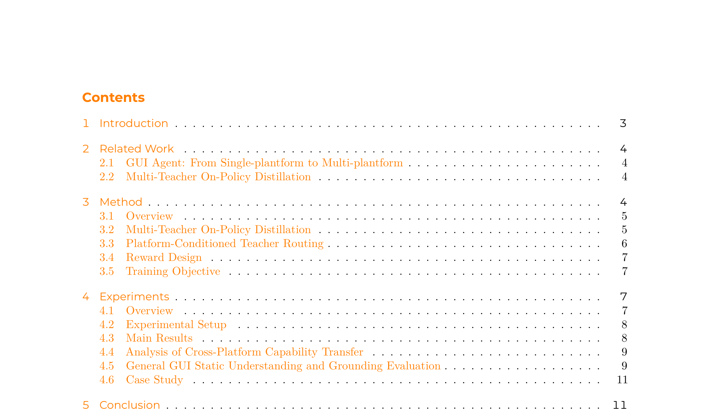
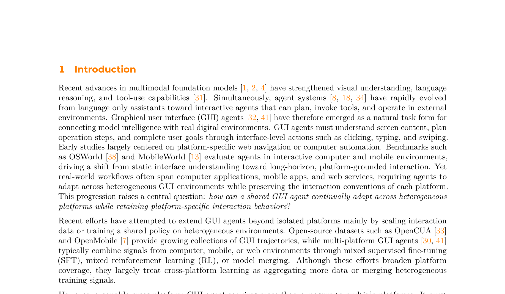
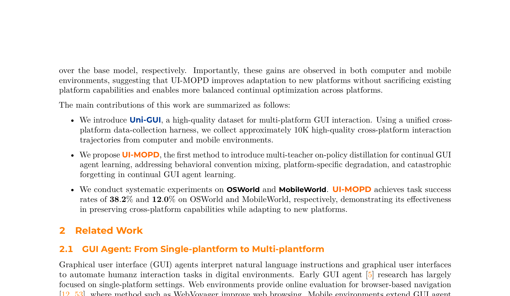

논문: UI-MOPD: Multi-Platform On-Policy Distillation for Continual GUI Agent Learning 저자: Niu Lian, Alan Chen, Zhehao Yu, Chengzhen Duan, Fazhan Liu, Hui Liu, Pei Fu, Jian Luan, Yaowei Wang, Shu-Tao Xia, Jinpeng Wang 소속: Tsinghua University, Xiaomi, HIT Shenzhen, Zhejiang University, Peng Cheng Laboratory 프로젝트 페이지: elispectre.github.io/UI-MOPD
핵심 요약
GUI 에이전트가 데스크톱과 모바일 환경을 동시에 다루려면 어떻게 해야 할까? 단순히 양쪽 데이터를 섞어 학습하면 “행동 관례 혼합(behavioral convention mixing)“과 “치명적 망각(catastrophic forgetting)“이 발생한다. 컴퓨터에서는 창 닫기가 이전 화면으로 돌아가는 것이지만, 모바일에서는 뒤로 가기 버튼을 누르는 식으로 플랫폼별 시맨틱이 다르기 때문이다.
UI-MOPD는 이 문제에 대한 우아한 해법을 제시한다:
| 구성 요소 | 역할 |
|---|---|
| Uni-GUI 데이터셋 | ~11.5K 고품질 크로스 플랫폼 궤적 (데스크톱 + 모바일) |
| 플랫폼별 교사 라우팅 | 환경에 따라 데스크톱/모바일 교사 모델을 동적 선택 |
| 온폴리시 증류(MOPD) | 교사의 행동 분포를 학생 정책으로 전이 |
| 적응형 KL 마스킹 | 과잉 정규화 방지, 충분한 보상 시 교사 패널티 제거 |
| K3 추정기 | 단일 샘플 KL 계산으로 메모리·연산 절감 |
결과: OSWorld 38.2% (이전 대비 +12.7% 상대 개선), MobileWorld 12.0% (+55.8% 상대 개선).
문제 정의: 왜 크로스 플랫폼 GUI 에이전트가 어려운가
GUI 에이전트는 화면을 이해하고, 단계를 계획하고, 클릭·타이핑·스와이프 등의 인터페이스 동작으로 사용자 목표를 달성하는 에이전트다. OSWorld(데스크톱)와 MobileWorld(모바일) 같은 벤치마크가 등장하면서 평가는 단일 플랫폼에서 크로스 플랫폼으로 전환하고 있다.
하지만 두 가지 근본적 병목이 있다:
1. 고품질 크로스 플랫폼 궤적의 부재
기존 데이터셋은 대부분 단일 플랫폼에 집중한다. 무효 액션, 부정확한 상태-행동 정렬, 일관성 없는 과업 단위 등 품질 문제도 심각하다.
2. 플랫폼별 상호작용 관례의 충돌
컴퓨터와 모바일은 액션 시맨틱이 다르다. 예를 들어 “이전 화면으로 돌아가기”가 컴퓨터에서는 창 닫기지만 모바일에서는 뒤로 가기 버튼이다. 이런 이질적 신호를 단순 결합(mixed SFT, model merge)하면 **평균화된 정책(averaged policy)**이 만들어지고, 지속 학습 환경에서는 치명적 망각이 발생한다.

UI-MOPD 방법론
Stage 1: 지도 학습(SFT)로 플랫폼별 교사 구축
Qwen3-VL-32B-Thinking 모델을 Uni-GUI 데이터셋으로 파인튜닝하여 두 개의 플랫폼별 교사를 만든다:
- 데스크톱 교사: 컴퓨터 환경의 고품질 궤적으로 학습
- 모바일 교사: 모바일 환경의 고품질 궤적으로 학습
각 교사는 해당 플랫폼의 고유한 행동 관례를 보존한다.
Stage 2: 다중 교사 온폴리시 증류
공유 학생 정책(Qwen3-VL-8B-Thinking)을 강화학습로 훈련하되, 매 롤아웃마다 현재 환경에 맞는 교사를 동적으로 선택한다.
핵심 메커니즘 4가지:
① 플랫폼 조건부 교사 라우팅
각 롤아웃이 시작될 때 환경 타입(데스크톱/모바일)을 감지하고, 대응하는 교사 모델에서 KL 다이버전스를 계산한다. 이렇게 하면 데스크톱 행동 관례와 모바일 행동 관례가 섞이는 것을 원천적으로 차단한다.
② K3 추정기 (K3 Estimator)
전체 어휘(vocabulary)에 대한 KL 다이버전스 계산은 메모리와 연산 비용이 크다. K3 추정기는 단일 샘플로 KL을 효율적으로 추정하여 이 오버헤드를 제거한다.
③ 적응형 KL 마스킹
과업 보상이 이미 충분히 높을 때 교사 패널티를 제거한다. “잘하고 있는데 굳이 교사를 따르게 강요”하는 과잉 정규화(over-regularization)를 방지하는 것이다.
④ 구조화된 결과 보상
작업 완료 여부에 따른 하드 패스/페일 보상 게이트로, 정책이 의미 있는 진전을 보장한다.

Uni-GUI 데이터셋
UI-MOPD의 기반은 Uni-GUI라는 고품질 크로스 플랫폼 데이터셋이다:
| 항목 | 규모 |
|---|---|
| 상호작용 스텝 | ~160K |
| 고품질 궤적 | ~11.5K |
| 플랫폼 | 2개 (데스크톱 + 모바일) |
| 베이스 모델 | Qwen3-VL-32B/8B-Thinking |
통일된 데이터 수집 하네스를 통해 컴퓨터 환경에서 ~110K, 모바일 환경에서 ~50K 스텝을 수집했다. 엄격한 필터링과 품질 관리를 거쳐 최종 ~10K 궤적을 확보했다.
실험 결과
주요 결과 (OSWorld & MobileWorld)
| 방법 | OSWorld | MobileWorld |
|---|---|---|
| 일반 모델 | ||
| Qwen3-VL-8B-Instruct | 33.9% | 9.4% |
| Qwen3-VL-8B-Thinking | 33.9% | 7.7% |
| Qwen3-VL-32B-Instruct | 32.6% | 9.0% |
| 단일 플랫폼 GUI 모델 | ||
| OpenCUA-7B | 28.2% | — |
| OpenCUA-32B | 34.8% | — |
| 다중 플랫폼 GUI 모델 | ||
| UI-TARS-1.5-7B | 27.4% | — |
| GUI-Owl-7B | 34.9% | 4.5% |
| 통합 전략 | ||
| Mixed-SFT | 35.0% | 6.4% |
| Model Merge (TIES) | 36.8% | 0.0% |
| UI-MOPD (제안) | 38.2% | 12.0% |
핵심 인사이트
-
데스크톱(OSWorld)에서 38.2% — 베이스 모델 대비 +12.7% 상대 개선. 단일 플랫폼 GUI 모델들도 능가한다.
-
모바일(MobileWorld)에서 12.0% — 베이스 모델 대비 +55.8% 상대 개선. Mixed-SFT(6.4%)나 TIES Merging(0.0%)과 비교하면 압도적이다.
-
TIES Merging의 참담한 실패 — 모델 병합 기법이 모바일 성공률을 0%로 만든다. 플랫폼별 행동 관례를 무시하고 가중치를 평균화할 때 발생하는 재앙을 보여준다.
-
Mixed-SFT도 모바일에서 성능 하락 — 단순 데이터 혼합은 모바일 성능을 7.7%→6.4%로 떨어뜨린다. 반면 UI-MOPD는 7.7%→12.0%로 끌어올린다.

크로스 플랫폼 능력 전이 분석
논문의 가장 흥미로운 발견 중 하나는 UI-MOPD가 양쪽 플랫폼에서 동시에 개선을 달성한다는 점이다. 일반적으로 새 플랫폼을 학습하면 기존 플랫폼 성능이 떨어지는(trade-off) 것이 상식인데, UI-MOPD는 이를 깬다.
이유는 명확하다. 플랫폼별 교사가 행동 닻(behavioral anchor) 역할을 하여, 학생 정책이 새 플랫폼에 적응하는 동안 기존 플랫폼의 행동 분포에서 크게 벗어나지 못하게 막기 때문이다.
의의와 한계
의의
- 온폴리시 증류의 GUI 에이전트 적용: 기존 온폴리시 증류는 주로 언어 모델 정렬에 쓰였다. UI-MOPD는 이를 GUI 에이전트의 크로스 플랫폼 지속 학습으로 확장한 최초의 사례다.
- 실용적 설계: K3 추정기와 적응형 KL 마스킹은 대규모 KL 계산의 병목을 해결하여 실제 사용이 가능하다.
- 오픈 데이터셋: Uni-GUI의 약 10K 고품질 궤적은 커뮤니티에 공유된다.
한계
- 2개 플랫폼만 검증: 웹 환경이나 태블릿 등 추가 플랫폼에서의 검증이 필요하다.
- 교사 품질에 대한 의존: 플랫폼별 교사의 품질이 전체 시스템의 상한선을 결정한다.
- 모바일 성능 절대치: 12.0%는 개선분 대비 여전히 낮은 절대치다. 모바일 환경의 복잡성과 데이터 부족이 원인이다.
결론
UI-MOPD는 GUI 에이전트가 단일 플랫폼의 한계를 넘어 진정한 크로스 플랫폼 에이전트로 진화하는 길을 제시한다. 핵심 통찰은 단순하다 — “모든 플랫폼의 데이터를 섞지 말고, 플랫폼별 전문성을 온폴리시 증루로 정책에 주입하라.”
플랫폼 조건부 라우팅 + 적응형 KL 마스킹 + 효율적 KL 추정이라는 세 가지 기술적 기여가 결합하여, 치명적 망각 없이 새 플랫폼을 학습하는 프레임워크를 완성했다. 향후 웹, 태블릿, IoT 등 더 많은 플랫폼으로 확장될 수 있는 확장성 높은 아키텍처이다.